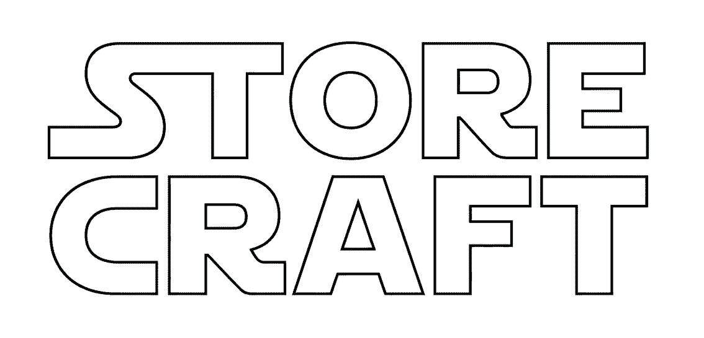
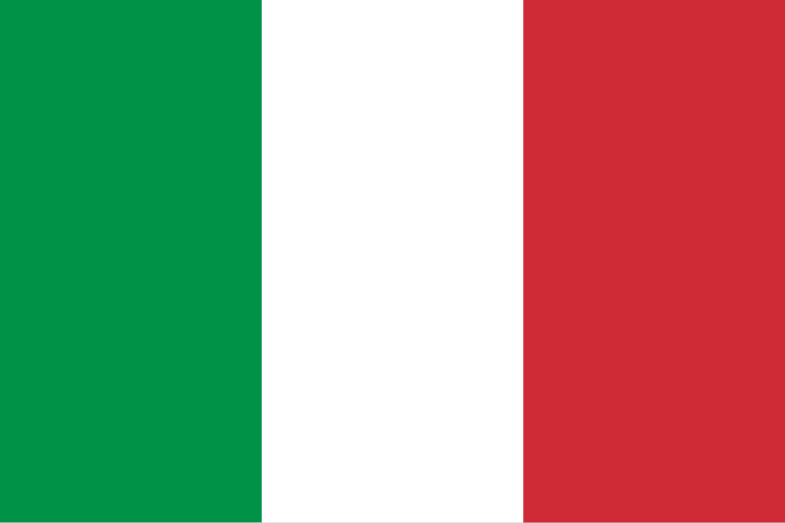
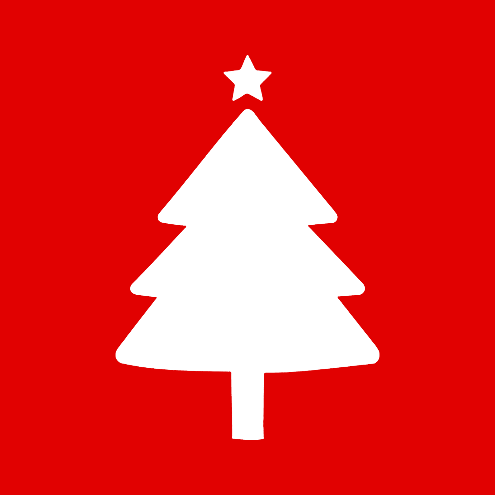

← Area operatore

Gestione negozi
Lettura in corso…
modalità modifica
trascina i moduli dentro la loro sezione per cambiarne l'ordine, poi registra
sorgente
clone
temi speciali


collega la cartella del progetto
← torna all'area operatore
← diagramma del negozio